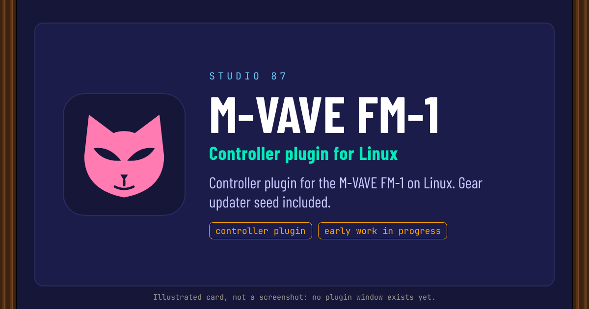

M-VAVE FM-1 for Linux
Controller plugin for Linux, early work · Studio 87
A controller for the M-VAVE FM-1 that is meant to handle its custom firmwares. Only a small updater seed exists today.

Illustrated card, not a screenshot: no plugin window exists yet.
Status: early work in progress
There is no FM-1 controller plugin yet and no MIDI map in our files. What exists is notes and a small command line checker for firmware files.
What exists today
tools/gear_updater/: lists MIDI ports, listens to one port (receive only) and checks a firmware .syx file (framing, size, SHA-256, DX7 bank checksum) with a safety checklist, plus a dry run. It does not flash anything: the FM-1 update protocol still has to be captured and verified. Runpython3 tools/gear_updater/gear_updater.py dry-run FILE.syx.- Unit tests for it in
tests/and a test workflow. - Device notes, firmware notes, an updater design and a MIDI implementation page (community sources only, every row marked with its status) in
docs/. - README, ROADMAP.md, LICENSE (AGPL-3.0-or-later), icon and the illustrated card above.
What does not exist yet
- A controller or editor plugin, a window, a mockup.
- A MIDI map or SysEx parameter map for the FM-1 (no M-VAVE manual or MIDI chart in our files).
- Any flashing or rollback code.
Roadmap
Copied from ROADMAP.md in the repo.
- Device notes and updater design written (done)
- Study the firmware formats (capture M-UPGRADE)
- Preset and parameter editor
- Firmware update tool (shared with the gear updater idea)
- SysEx file check, port listing, dry run, unit tests (done)
- Capture M-UPGRADE with USBPcap and document the FM-1 update framing
- Flash and rollback for the FM-1 only after the above is verified
- Move to its own gear-updater repo (needs creating on GitHub)
AGPL-3.0-or-later. Not affiliated with or endorsed by any hardware maker named here. All trademarks belong to their owners.